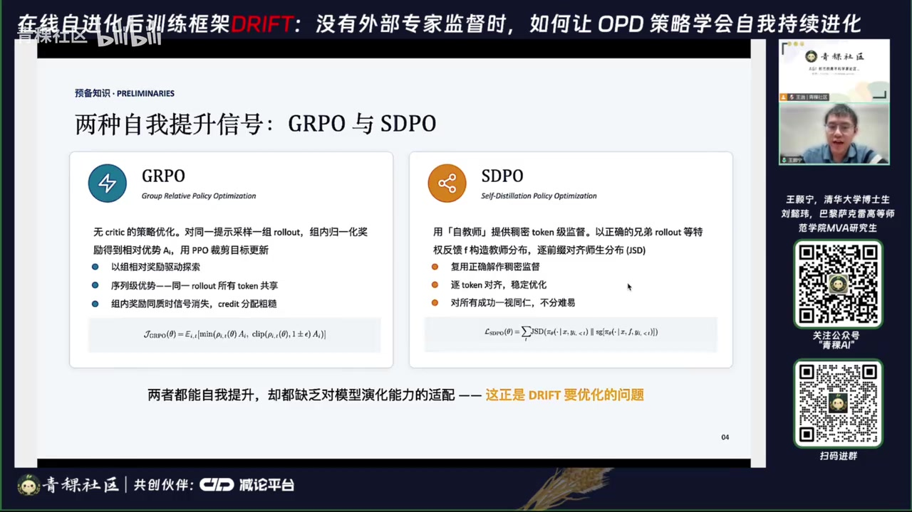
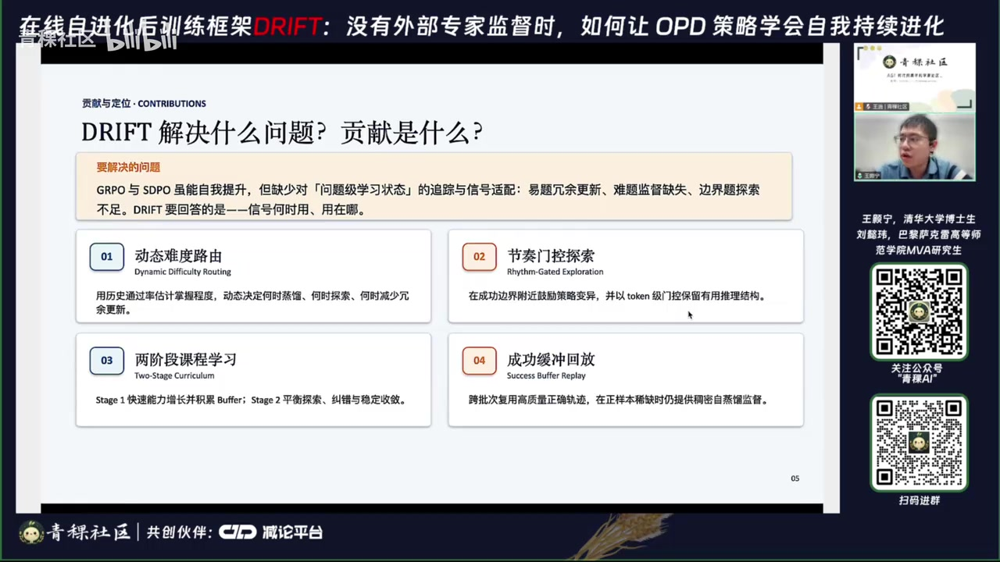
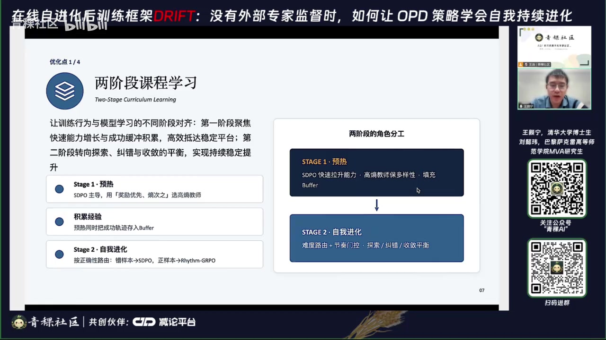
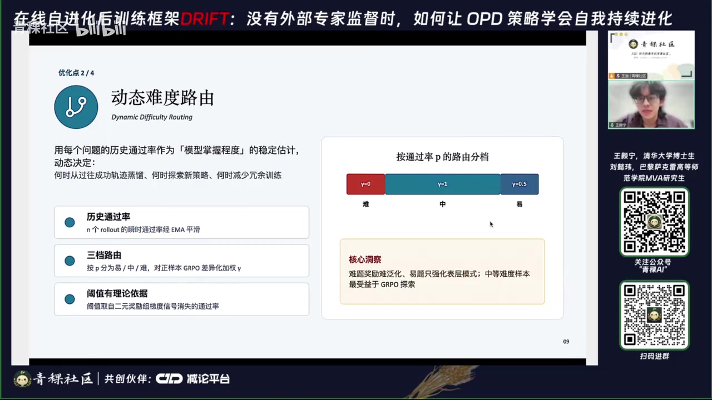
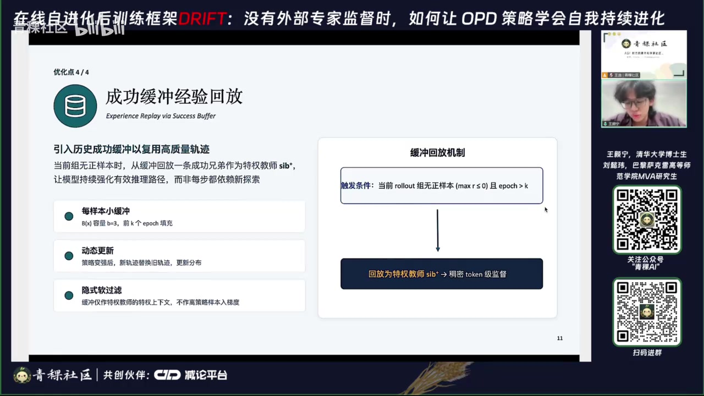
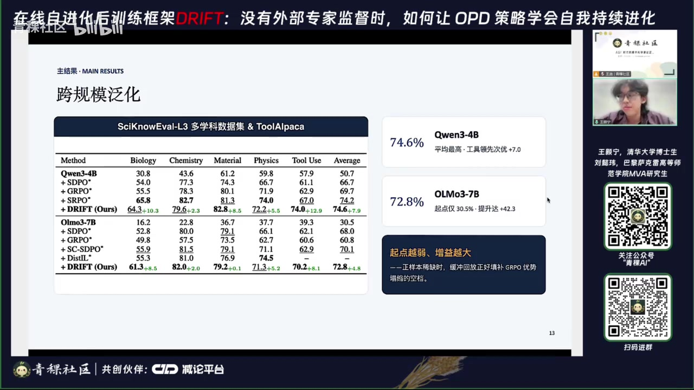

01｜为什么 GRPO 与自蒸馏都会失配
两条路线都能让模型从自身轨迹学习，但如果不跟踪题目难度与学习进度，信号会被分配到错误位置。
00:40–08:40 GRPO 用组内相对奖励鼓励探索，却只有粗粒度序列优势；自蒸馏用成功轨迹构造 token 级教师，监督更密，却容易不稳定。共同缺口是缺少“模型现在掌握到哪一步”的持久估计。

| 失配类型 | 现象 | 风险 |
|---|---|---|
| 简单题过度优化 | 已掌握样本继续产生大量更新 | 学到格式与套话而非新能力 |
| 难题监督缺失 | 偶发正确可能是天才轨迹或蒙对 | 蒸馏不可学习路径或错误推理 |
| 边界题探索不足 | 最有学习价值的中等难度题未被重点训练 | 错过能力边界附近的进步机会 |
02｜四个机制组成两阶段框架
DRIFT 把训练拆成预热与正式阶段，并在问题级、token 级和跨批次经验三个尺度上协调信号。


03｜不对称更新与节奏门控
错误轨迹需要明确纠错目标，正确轨迹需要强化自身；把两者用同一种更新处理，会浪费信号甚至压缩解空间。
12:20–17:50 负样本沿自蒸馏分支向成功轨迹对齐，获得稠密纠错；正样本沿策略梯度分支强化自身，避免被另一条“标准答案”拉走。难度路由再根据历史通过率，让中等难度题获得最强探索。
18:00–25:20 节奏门控只放大同时满足两项条件的 token：整条轨迹已被验证正确，且学生在该位置比特权教师更快消除不确定性。权重被限制在 1 到 2 之间，只增强有效方向，不反转梯度。

04｜成功经验回放与实验结果
成功缓冲池不是直接把旧轨迹拿来做 off‑policy 策略梯度，而是给停止梯度的自教师提供特权上下文。

28:40–32:10 报告在多学科问答与工具调用基准、三种模型上评测；Qwen3‑8B 主实验平均分为 79.5%，比最强基线高 2.1 分、比起点高约 30 分，工具使用达到 79.2%。去掉难度路由降至 74.1，去掉预热阶段降至 71.3。

05｜适用边界与工程启示
最重要的不是把更多奖励塞进训练，而是在正确阶段、正确难度、正确 token 上使用正确的学习信号。
当前方法依赖可机器验证的奖励，因此更适合科学问答、数学与工具调用。开放式写作、主观偏好和现实任务需要更可靠的 rubric、反馈模型或多源验证。
证据边界：本文忠实整理视频中的讲解、论文图表与演讲者判断，并非对论文复现实验或独立同行评审。自动转录中的专名已结合幻灯片校正；仍不确定的缩写和动态数字应以原论文或项目页面为准。